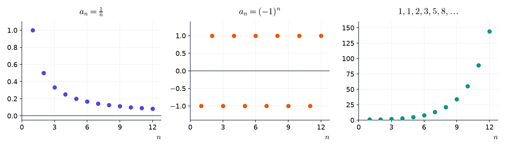
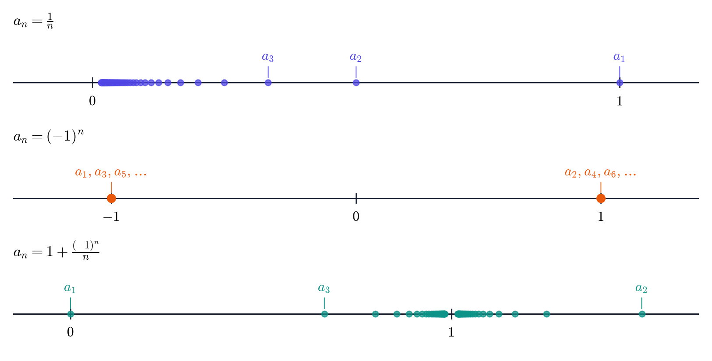
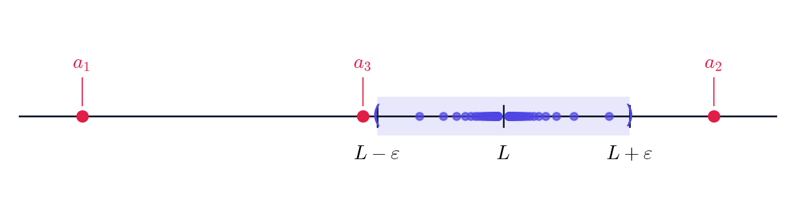
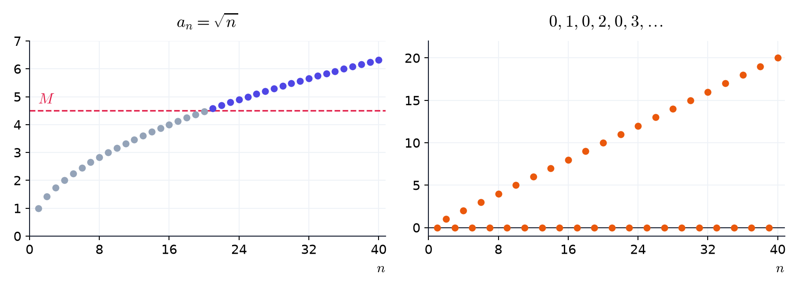
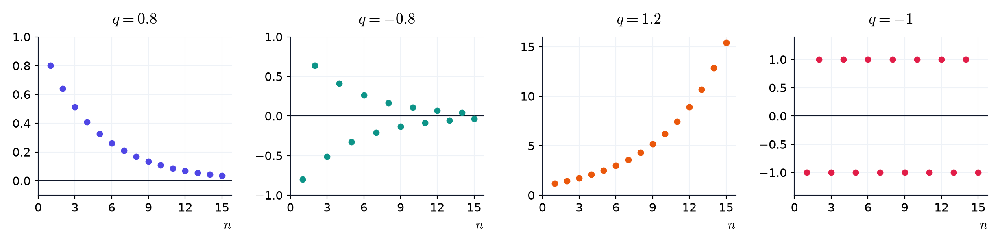
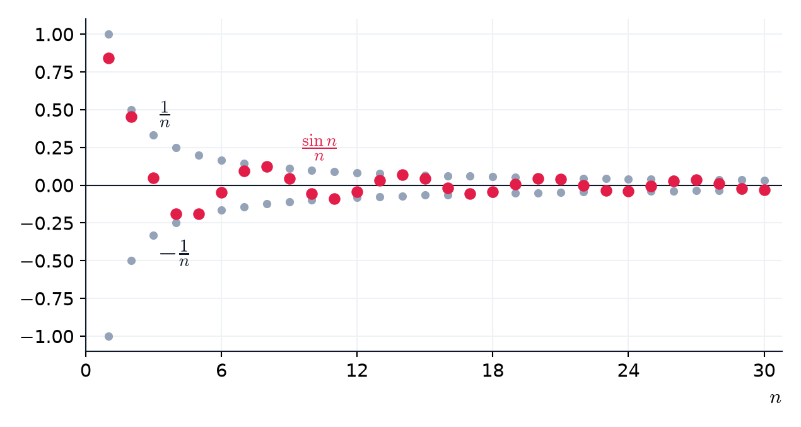
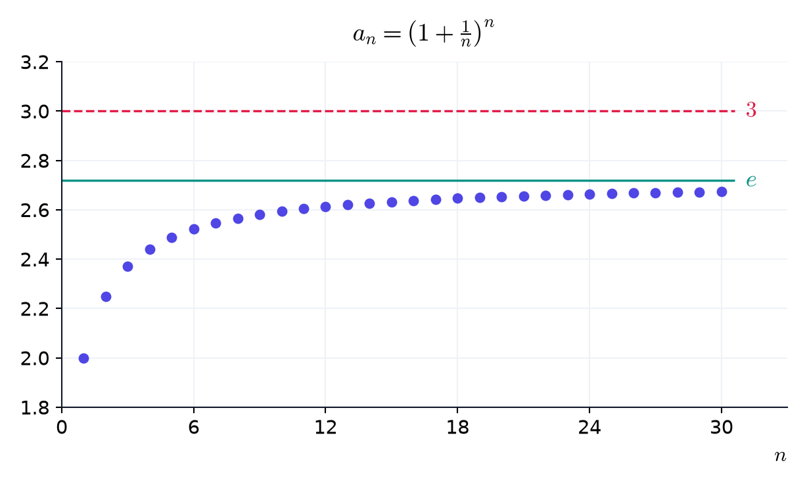
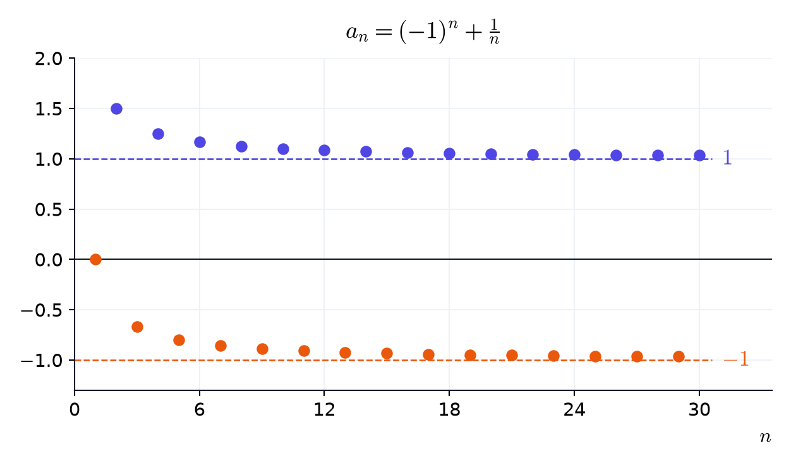

2 סדרות וגבולות
2.1 סדרות
בפרק 1 ראינו ש-\(\sqrt{2}\) אינו רציונלי, ולכן הכתיבה העשרונית שלו לא נגמרת. אפשר רק לקרב אותו, ספרה אחר ספרה:
\[1, \quad 1.4, \quad 1.41, \quad 1.414, \quad 1.4142, \quad \ldots\]
רשימה כזו, שיש בה סדר ואין לה סוף, היא סדרה.
הגדרה 2.1.1 — סדרה.
סדרה היא רשימה אינסופית ומסודרת של מספרים ממשיים:
\[a_1, \quad a_2, \quad a_3, \quad \ldots\]
המספר \(a_n\) נקרא האיבר שבמקום \(,n\) ו-\(n\) נקרא האינדקס. נסמן את הסדרה כולה ב-\(a_n\) או ב-\(.(a_n)\)
במונחים של פרק 1: סדרה היא פונקציה שתחום ההגדרה שלה הוא \(,\mathbb{N}\) ו-\(a_n\) הוא הערך שלה ב-\(.n\)
חשוב לזכור — שתי דרכים לתאר סדרה.
- נוסחה: כלל שמחשב את \(a_n\) ישירות מ-\(.n\) למשל, הנוסחה \(a_n = 2n - 1\) נותנת את הסדרה \(1, 3, 5, 7, \ldots\) של המספרים האי-זוגיים.
- רקורסיה: נותנים את האיבר הראשון (או כמה ראשונים), וכלל שמחשב כל איבר מהקודמים לו. למשל, \(a_1 = 1\) ו-\(a_{n+1} = 2a_n\) נותנים את הסדרה \(1, 2, 4, 8, \ldots\) של חזקות \(2\).
הגדרה 2.1.2 — סדרות מפורסמות.
- הסדרה הקבועה \(a_n = c\) נותנת \(c, c, c, \ldots\) בכל מקום.
- הסדרה ההרמונית \(a_n = \frac{1}{n}\) נותנת \(1, \frac{1}{2}, \frac{1}{3}, \frac{1}{4}, \ldots\) בזה אחר זה.
- סדרה מתחלפת היא סדרה שהסימנים של איבריה מתחלפים. למשל, \(a_n = (-1)^n\) נותנת \(-1, 1, -1, 1, \ldots\) לסירוגין.
- סדרה חשבונית: בכל צעד מוסיפים אותו מספר \(d\) (ההפרש), ולכן \(.a_n = a_1 + (n - 1)d\)
- סדרה הנדסית: בכל צעד כופלים באותו מספר \(q\) (המנה), ולכן \(.a_n = a_1 q^{n-1}\)
- סדרת פיבונאצ’י: שני האיברים הראשונים הם \(,1\) וכל איבר הוא סכום שני הקודמים לו: \(.a_{n+2} = a_{n+1} + a_n\)
את הסדרה מציירים כנקודות \(,(n, a_n)\) בלי לחבר ביניהן: בין \(n = 1\) ל-\(n = 2\) אין איבר.

יש עוד דרך לצייר סדרה: מסמנים את האיברים עצמם כנקודות על הישר הממשי. בציור כזה לא רואים את המקום של כל איבר בסדרה, אבל רואים היטב איפה האיברים מצטופפים.

דוגמה 2.1.3 — מחשבים איברים.
כתבו את האיברים מופרדים בפסיקים.
(א) הסדרה \(a_n = \frac{n + 1}{n}\)
\(a_1 =\) \(2\), \(a_2 =\) \(\frac{3}{2}\), \(a_{10} =\) \(\frac{11}{10}\)
(ב) שמונת האיברים הראשונים של סדרת פיבונאצ’י:
\(1, 1, 2, 3, 5, 8, 13, 21\)
(ג) הסדרה החשבונית שמתחילה ב-\(4, 7, 10, 13\)
\(a_n =\) \(3n + 1\), \(a_{20} =\) \(61\)
(ד) הסדרה ההנדסית שמתחילה ב-\(3, 6, 12, 24\)
\(a_n =\) \(3 \cdot 2^{n-1}\)
ב-(ב) כל איבר הוא סכום שני הקודמים לו. ב-(ג) ההפרש הוא \(,d = 3\) וב-(ד) המנה היא \(.q = 2\)
(א) \(,a_1 = \frac{2}{1} = 2\) \(,a_2 = \frac{3}{2}\) \(.a_{10} = \frac{11}{10}\)
(ב) \(,1 + 1 = 2\) \(,1 + 2 = 3\) \(,2 + 3 = 5\) \(,3 + 5 = 8\) \(5 + 8 = 13\) ו-\(.8 + 13 = 21\)
(ג) \(a_1 = 4\) ו-\(,d = 3\) ולכן \[\begin{aligned} a_n &= 4 + (n - 1) \cdot 3 \\ &= 3n + 1 \\ a_{20} &= 3 \cdot 20 + 1 = 61 \end{aligned}\]
(ד) \(,a_1 = 3\) ובכל צעד כופלים ב-\(,2\) ולכן \(.a_n = 3 \cdot 2^{n-1}\)
שימו לב — כמה איברים ראשונים לא קובעים סדרה.
איך ממשיכים את \(2, 4, 8\) ואחריהם שלוש נקודות? אולי \(16\) (חזקות של \(2\)), ואולי \(14\) (ההפרשים \(2, 4, 6\) גדלים ב-\(2\)). לכן מתארים סדרה בנוסחה או ברקורסיה. כשמבקשים “נוסחה לפי האיברים הראשונים”, הכוונה לנוסחה הפשוטה ביותר שמתאימה להם.
בדיקה עצמית.
(א) האם הרשימה שבה כל האיברים שווים ל-\(1\) היא סדרה?
כן, זו הסדרה הקבועה \(.a_n = 1\) בסדרה מותר לאיברים לחזור.
(ב) מהו האיבר החמישי של \(?a_n = (-1)^n n\)
\(.a_5 = (-1)^5 \cdot 5 = -5\) חזקה אי-זוגית של \(-1\) שווה \(.{-}1\)
סיכום.
- סדרה היא רשימה אינסופית \(a_1, a_2, a_3\) וכן הלאה, ו-\(a_n\) הוא האיבר שבמקום \(.n\)
- מתארים סדרה בנוסחה או ברקורסיה, ולא בכמה איברים ראשונים.
- סדרות מפורסמות: קבועה, הרמונית, מתחלפת, חשבונית, הנדסית, פיבונאצ’י.
תרגילים
שאלה 2.1.4 — איברים מנוסחה.
חשבו.
(א) \(a_n = n^2 - n\)
\(a_3 =\) \(6\)
(ב) \(a_n = \frac{(-1)^n}{n}\)
\(a_4 =\) \(\frac{1}{4}\), \(a_5 =\) \(-\frac{1}{5}\)
(ג) \(a_n = \frac{2^n}{n}\)
\(a_3 =\) \(\frac{8}{3}\)
שאלה 2.1.5 — איברים מרקורסיה.
הסדרה נתונה ברקורסיה: \(a_1 = 2\) ו-\(.a_{n+1} = 3a_n - 1\) חשבו:
\(a_2 =\) \(5\), \(a_3 =\) \(14\), \(a_4 =\) \(41\)
\(,a_2 = 3 \cdot 2 - 1 = 5\) \(,a_3 = 3 \cdot 5 - 1 = 14\) \(.a_4 = 3 \cdot 14 - 1 = 41\)
שאלה 2.1.6 — סדרה הנדסית עם מנה שלילית.
\(a_1 = 2\) והמנה היא \(.q = -3\) כתבו את חמשת האיברים הראשונים, מופרדים בפסיקים.
\(2, -6, 18, -54, 162\)
בכל צעד כופלים ב-\(,{-}3\) ולכן הסימן מתחלף: זו גם סדרה מתחלפת.
שאלה 2.1.7 — נוסחה מאיברים.
מצאו את הנוסחה הפשוטה ביותר שמתאימה לאיברים הראשונים.
(א) \(7, 12, 17, 22\)
\(a_n =\) \(5n + 2\)
(ב) \(1, 4, 9, 16\)
\(a_n =\) \(n^2\)
(ג) \(\frac{1}{2}, \frac{1}{4}, \frac{1}{8}, \frac{1}{16}\)
\(a_n =\) \(\frac{1}{2^n}\)
(א) חשבונית עם \(a_1 = 7\) ו-\(:d = 5\) \[\begin{aligned} a_n &= 7 + 5(n - 1) \\ &= 7 + 5n - 5 \\ &= 5n + 2 \end{aligned}\]
(ב) אלה הריבועים \(,1^2, 2^2, 3^2, 4^2\) ולכן \(.a_n = n^2\)
(ג) הנדסית עם \(a_1 = \frac{1}{2}\) ו-\(,q = \frac{1}{2}\) ולכן \(.a_n = \frac{1}{2}\left(\frac{1}{2}\right)^{n-1} = \frac{1}{2^n}\)
שאלה 2.1.8 — חשבונית או הנדסית?
(א) הסדרה שמתחילה ב-\(5, 2, -1, -4\)
חשבונית: בכל צעד מוסיפים \(.{-}3\)
(ב) הסדרה שמתחילה ב-\(2, -6, 18, -54\)
הנדסית: בכל צעד כופלים ב-\(.{-}3\)
(ג) הסדרה שמתחילה ב-\(1, 2, 4, 7, 11\)
אף אחת: ההפרשים \(1, 2, 3, 4\) אינם קבועים, וגם המנות אינן קבועות.
2.2 גבול של סדרה
הקירובים העשרוניים מתקרבים אל \(\sqrt{2}\) כמה שרוצים, ואילו \((-1)^n\) קופצת בין \(-1\) ל-\(1\) ולא מתייצבת. במילים: \(a_n\) מתקרבת ל-\(L\) אם \(a_n\) קרוב ל-\(L\) כמה שרוצים, בתנאי ש-\(n\) גדול מספיק.
כדי לבדוק “קרוב כמה שרוצים” מדברים על שגיאה: המרחק \(|a_n - L|\) בין האיבר לגבול. בוחרים שגיאה מותרת, מספר חיובי \(\varepsilon\) (למשל \(0.1\) או \(0.001\)), וצריך להראות שממקום מסוים והלאה השגיאה של כל האיברים קטנה מ-\(.\varepsilon\)
הגדרה 2.2.1 — גבול של סדרה.
נאמר שהסדרה \(a_n\) מתכנסת ל-\(,L\) ונסמן \(\lim\limits_{n\to\infty} a_n = L\) או \(,a_n \to L\) אם לכל שגיאה מותרת \(\varepsilon > 0\) יש מקום בסדרה שממנו והלאה כל האיברים מקיימים
\[.|a_n - L| < \varepsilon\]
המספר \(L\) נקרא הגבול של הסדרה, ונאמר גם ש-\(a_n\) שואפת ל-\(.L\) סדרה שיש לה גבול נקראת מתכנסת, וסדרה שאין לה גבול נקראת מתבדרת.
סימולציה 2.2.2 — שגיאה מותרת ורצועה סביב הגבול.
בחרו סדרה והקטינו את השגיאה המותרת \(.\varepsilon\) הרצועה היא כל המספרים שהמרחק שלהם מ-\(L\) קטן מ-\(.\varepsilon\) ככל שהשגיאה המותרת קטנה, המקום שממנו והלאה כל האיברים בתוך הרצועה נדחה ימינה, אבל עבור סדרה מתכנסת הוא תמיד קיים. עבור \((-1)^n\) ושגיאה מותרת קטנה מספיק אין מקום כזה, לא משנה סביב איזה מספר שמים את הרצועה.
על הישר הממשי. האי-שוויון \(|a_n - L| < \varepsilon\) אומר ש-\(a_n\) נמצא בקטע \(.(L - \varepsilon, L + \varepsilon)\) לכן בציור על הישר הממשי ההגדרה אומרת: לכל שגיאה מותרת, כל האיברים חוץ ממספר סופי שלהם נמצאים בקטע הזה. מחוץ לקטע נשארים רק האיברים שלפני המקום שממנו והלאה כולם בפנים.

דוגמה 2.2.3 — הסדרה ההרמונית שואפת לאפס.
עבור \(a_n = \frac{1}{n}\) ו-\(,L = 0\) השגיאה היא \(.\left|\frac{1}{n} - 0\right| = \frac{1}{n}\) מאיזה מקום היא קטנה מהשגיאה המותרת?
(א) השגיאה המותרת \(\varepsilon = 0.1\)
החל מ-\(n =\) \(11\)
(ב) השגיאה המותרת \(\varepsilon = 0.001\)
החל מ-\(n =\) \(1001\)
(א) \[\begin{aligned} \tfrac{1}{n} &< 0.1 \\ 1 &< 0.1n \\ 10 &< n \end{aligned}\] (כפלנו ב-\(n\) וחילקנו ב-\(,0.1\) שניהם חיוביים.) כלומר החל מ-\(.n = 11\)
(ב) \[\begin{aligned} \tfrac{1}{n} &< 0.001 \\ 1 &< 0.001n \\ 1000 &< n \end{aligned}\] כלומר החל מ-\(.n = 1001\) לכל שגיאה מותרת \(\varepsilon\) זה קורה כאשר \(,n > \frac{1}{\varepsilon}\) ולכן \(.\frac{1}{n} \to 0\)
כלל — רק הזנב קובע.
- האיברים ממקום מסוים והלאה נקראים זנב של הסדרה, והגבול תלוי רק בזנב. שינוי של \(1000\) האיברים הראשונים לא משנה אותו.
- לסדרה יש לכל היותר גבול אחד: אי אפשר להתקרב כמה שרוצים לשני מספרים שונים בבת אחת.
- הגבול לא חייב להיות אחד האיברים, והסדרה לא חייבת להתקרב אליו מצד אחד. למשל, \(1 + \frac{(-1)^n}{n}\) נמצאת לסירוגין מעל \(1\) ומתחת לו, ובכל זאת שואפת ל-\(.1\)
חשוב לזכור — חזקה עם מעריך אי-רציונלי.
בפרק 1 דחינו את ההגדרה של חזקה כמו \(.2^{\sqrt{2}}\) עכשיו אפשר להשלים אותה: לוקחים את הקירובים העשרוניים של \(,\sqrt{2}\) ואת החזקות שלהם, \(2^{1}\) ו-\(2^{1.4}\) ו-\(2^{1.41}\) וכן הלאה. כל אחת מהן היא חזקה עם מעריך רציונלי, שכבר הגדרנו. הסדרה הזו מתכנסת, ו-\(2^{\sqrt{2}}\) הוא הגבול שלה, בערך \(.2.665\)
בדיקה עצמית.
(א) מהו הגבול של הסדרה \(0.9, \ 0.99, \ 0.999\) וכן הלאה, שבה כל איבר מוסיף עוד \(9\) בסוף?
השגיאות הן \(0.1\) ו-\(0.01\) ו-\(0.001\) וכן הלאה, ולכן לכל שגיאה מותרת יש מקום שממנו והלאה כל האיברים בשגיאה קטנה ממנה. הגבול הוא בדיוק \(.1\)
(ב) האם הסדרה \(1, 0, \frac{1}{2}, 0, \frac{1}{3}, 0\) וכן הלאה מתכנסת?
כן, ל-\(.0\) השגיאה של האפסים היא \(,0\) והשגיאה של האיבר \(\frac{1}{k}\) היא \(,\frac{1}{k}\) שקטנה מכל שגיאה מותרת כש-\(k\) גדול מספיק. הסדרה לא חייבת להתקרב לגבול בכל צעד.
שאיפה לאינסוף
הסדרה \(\sqrt{n}\) מתבדרת, אבל בצורה מסודרת: היא עוברת כל גובה ונשארת מעליו.
הגדרה 2.2.4 — שאיפה לאינסוף.
נאמר ש-\(a_n\) שואפת לאינסוף ונסמן \(\lim\limits_{n\to\infty} a_n = \infty\) או \(,a_n \to \infty\) אם לכל מספר \(M\) יש מקום בסדרה שממנו והלאה כל האיברים גדולים מ-\(.M\) באופן דומה, \(a_n\) שואפת למינוס אינסוף (\(a_n \to -\infty\)) אם לכל מספר \(M\) יש מקום בסדרה שממנו והלאה כל האיברים קטנים מ-\(.M\)

שימו לב — אינסוף אינו גבול.
סדרה ששואפת לאינסוף היא סדרה מתבדרת: אין מספר שהיא מתקרבת אליו. הסימון \(\lim\limits_{n\to\infty} a_n = \infty\) רק מתאר איך היא מתבדרת.
מה עושים עם גבול
כשפוגשים סדרה, המשימה היא אחת משלוש:
חשוב לזכור — שלוש משימות.
- לחשב את הגבול. בעזרת כמה גבולות שכדאי לזכור, וכללי חישוב פשוטים.
- להראות שיש גבול, גם בלי לדעת מהו. למשל, כשהסדרה עולה כל הזמן ובכל זאת נשארת מתחת למספר קבוע.
- להראות שאין גבול. למשל, כשהאיברים מתרחקים מאפס בלי סוף, או כשחלק מהאיברים מתקרבים למספר אחד וחלק למספר אחר.
חשוב לזכור — לא תמיד אפשר לחשב.
לפעמים יודעים שיש גבול, אבל אין דרך לכתוב אותו בעזרת המספרים שאנחנו מכירים. כך קורה עם הסדרה \(:\left(1 + \frac{1}{n}\right)^n\) יש לה גבול, אבל שום חישוב פשוט לא נותן אותו. בהמשך הפרק נראה למה יש לה גבול, ונקרא לו \(.e\)
בדיקה עצמית.
איזו משימה מתאימה לסדרה \(?(-1)^n\)
האיברים קופצים בין \(-1\) ל-\(1\) ולא מתייצבים, ולכן המשימה היא להראות שאין לה גבול: חלק מהאיברים (במקומות הזוגיים) שווים \(,1\) והשאר שווים \(.{-}1\)
סיכום.
- \(a_n \to L\) אם לכל שגיאה מותרת \(\varepsilon > 0\) יש מקום שממנו והלאה כל האיברים מקיימים \(.|a_n - L| < \varepsilon\)
- רק הזנב קובע את הגבול, ולסדרה יש לכל היותר גבול אחד.
- \(a_n \to \infty\) אם לכל מספר \(M\) יש מקום שממנו והלאה כל האיברים גדולים מ-\(.M\) זו סדרה מתבדרת.
- על סדרה יש שלוש משימות: לחשב את הגבול, להראות שהוא קיים, או להראות שאינו קיים. לא תמיד אפשר לחשב אותו.
תרגילים
שאלה 2.2.5 — מנחשים גבול מטבלה.
(א) \(a_n = \frac{2n + 1}{n}\)
| \(n\) | \(1\) | \(10\) | \(100\) | \(1000\) |
|---|---|---|---|---|
| \(a_n\) | \(3\) | \(2.1\) | \(2.01\) | \(2.001\) |
הגבול הוא \(2\)
(ב) \(a_n = 5 - \frac{1}{n^2}\)
| \(n\) | \(1\) | \(10\) | \(100\) |
|---|---|---|---|
| \(a_n\) | \(4\) | \(4.99\) | \(4.9999\) |
הגבול הוא \(5\)
(א) \(,\frac{2n + 1}{n} = 2 + \frac{1}{n}\) והשגיאה \(\frac{1}{n}\) קטנה כמה שרוצים.
(ב) השגיאה היא \(,\frac{1}{n^2}\) שקטנה כמה שרוצים, ולכן הגבול \(.5\)
שאלה 2.2.6 — מתכנסת?
(א) \(\frac{(-1)^n}{n}\)
מתכנסת ל-\(:0\) השגיאה היא \(,\frac{1}{n}\) בדיוק כמו בסדרה ההרמונית.
(ב) \((-1)^n\)
מתבדרת: האיברים \(1\) ו-\(-1\) חוזרים בלי סוף, ואין מספר שהמרחק של שניהם ממנו קטן מ-\(.0.5\)
(ג) \(7\) (הסדרה הקבועה)
מתכנסת ל-\(,7\) כי השגיאה היא תמיד \(.0\)
(ד) \(n^2\)
מתבדרת: היא שואפת לאינסוף.
שאלה 2.2.7 — שגיאה מותרת.
עבור \(a_n = \frac{n + 2}{n}\) ו-\(L = 1\) השגיאה היא \(.\left|\frac{n + 2}{n} - 1\right| = \frac{2}{n}\)
השגיאה קטנה מ-\(\varepsilon = 0.01\) החל מ-\(n =\) \(201\)
\(\frac{2}{n} < 0.01\) בדיוק כאשר \(,n > 200\) כלומר החל מ-\(.n = 201\) אפשר לבדוק בסימולציה סימולציה 2.2.2.
שאלה 2.2.8 — לאן היא שואפת?
(א) \(-3n\)
\(:{-}\infty\) לכל מספר \(M\) יש מקום שממנו והלאה \(.{-}3n < M\)
(ב) \((-2)^n\)
אף אחד מהם: הסימן מתחלף (\(-2\) ואחריו \(4\) ואחריו \(-8\)), ולכן היא לא נשארת מעל שום מספר וגם לא מתחת לשום מספר.
(ג) \(n + 2(-1)^n\)
\(:\infty\) האיברים הם \(-1, 4, 1, 6, 3, 8\) וכן הלאה: הסדרה לא עולה בכל צעד, אבל \(,n + 2(-1)^n \ge n - 2\) ולכן לכל \(M\) ממקום מסוים כל האיברים גדולים מ-\(.M\) כדי לשאוף לאינסוף לא חייבים לעלות בכל צעד.
2.3 סדרות סטנדרטיות
משפט 2.3.1 — גבולות של סדרות סטנדרטיות.
- סדרה קבועה: \(.c \to c\)
- \(\frac{1}{n^p} \to 0\) לכל \(.p > 0\) למשל \(\frac{1}{n}\) ו-\(\frac{1}{n^2}\) ו-\(.\frac{1}{\sqrt{n}}\)
- \(n^p \to \infty\) לכל \(.p > 0\)
- הסדרה \(q^n\) תלויה ב-\(:q\)
- אם \(|q| < 1\) אז \(.q^n \to 0\)
- אם \(q = 1\) אז \(.q^n \to 1\)
- אם \(q > 1\) אז \(.q^n \to \infty\)
- אם \(q \le -1\) היא מתבדרת, ואינה שואפת ל-\(\infty\) וגם לא ל-\(.{-}\infty\)
- \(\sqrt[n]{a} \to 1\) לכל \(,a > 0\) וגם \(.\sqrt[n]{n} \to 1\)
למה?
- כפל חוזר במספר שהערך המוחלט שלו קטן מ-\(1\) מקרב את התוצאה לאפס: \(,0.8^2 = 0.64\) \(,0.8^{10} \approx 0.11\) \(.0.8^{30} \approx 0.001\) כפל חוזר במספר גדול מ-\(1\) מגדיל בלי גבול.
- \(\sqrt[n]{a} = a^{1/n}\) והמעריך \(\frac{1}{n}\) שואף ל-\(,0\) ו-\(.a^0 = 1\) למשל \(.\sqrt[10]{2} \approx 1.07\)
- גם \(\sqrt[n]{n}\) מתקרב ל-\(:1\) \(,\sqrt[10]{10} \approx 1.26\) \(,\sqrt[100]{100} \approx 1.047\) \(.\sqrt[1000]{1000} \approx 1.007\)

שימו לב — למה צריך את התנאים?
- עבור \(q = -1\) האיברים קופצים בין \(-1\) ל-\(,1\) ואין גבול, אף ש-\(|q| = 1\) כמו עבור \(.q = 1\)
- עבור \(q = -2\) הערך המוחלט גדל, אבל הסימן מתחלף, ולכן אין גבול וגם אין שאיפה ל-\(\pm\infty\) (כמו בתרגיל שאלה 2.2.8).
- ב-(2) הדרישה \(p > 0\) הכרחית: עבור \(p = 0\) מתקבלת הסדרה הקבועה \(,\frac{1}{n^0} = 1\) שאינה שואפת ל-\(.0\)
- ב-(5) הדרישה \(a > 0\) הכרחית: עבור \(a = 0\) כל האיברים \(,0\) והגבול \(0\) ולא \(.1\)
דוגמה 2.3.2 — גבולות סטנדרטיים.
(א) \((0.9)^n \to\) \(0\)
(ב) \(\left(-\frac{1}{3}\right)^n \to\) \(0\)
(ג) \((1.5)^n \to\) \(\infty\)
(ד) \(\frac{1}{n^5} \to\) \(0\)
(ה) \(\sqrt[n]{7} \to\) \(1\)
(א) זו \(q^n\) עם \(,q = 0.9\) ו-\(,|q| < 1\) ולכן לפי סעיף 4 במשפט הגבול הוא \(.0\)
(ב) זו \(q^n\) עם \(,q = -\frac{1}{3}\) ו-\(,|q| = \frac{1}{3} < 1\) ולכן לפי סעיף 4 הגבול הוא \(.0\) הסימן מתחלף, אבל האיברים מתקרבים ל-\(.0\)
(ג) לפי סעיף 4, כי \(.q > 1\)
(ד) לפי סעיף 2 עם \(.p = 5\)
(ה) לפי סעיף 5.
בדיקה עצמית.
(א) לאן שואפת הסדרה \(?(1.01)^n\)
\(,q = 1.01 > 1\) ולכן \(.(1.01)^n \to \infty\) זה לוקח זמן (\(1.01^{100} \approx 2.7\)), אבל היא עוברת כל גובה.
(ב) לאן שואפת הסדרה \(?(-0.99)^n\)
\(,|q| = 0.99 < 1\) ולכן \(.(-0.99)^n \to 0\) הסימן מתחלף, אבל הערך המוחלט שואף ל-\(.0\)
סיכום.
- סדרה קבועה שואפת לעצמה. \(\frac{1}{n^p} \to 0\) ו-\(n^p \to \infty\) כאשר \(.p > 0\)
- \(q^n\) שואפת ל-\(0\) כאשר \(,|q| < 1\) ל-\(1\) כאשר \(,q = 1\) ול-\(\infty\) כאשר \(.q > 1\) כאשר \(q \le -1\) היא מתבדרת.
- \(\sqrt[n]{a} \to 1\) (כאשר \(a > 0\)) וגם \(.\sqrt[n]{n} \to 1\)
תרגילים
שאלה 2.3.3 — לאן הסדרה שואפת?
(א) \(\left(\frac{2}{3}\right)^n \to\) \(0\)
(ב) \(\frac{1}{\sqrt{n}} \to\) \(0\)
(ג) \(n^3 \to\) \(\infty\)
(ד) \(4^n \to\) \(\infty\)
(ה) \(\sqrt[n]{100} \to\) \(1\)
(ו) \((-0.5)^n \to\) \(0\)
שאלה 2.3.4 — מתי \(q^n\) מתכנסת?
\(q^n\) מתכנסת בדיוק כאשר \(q\) בקבוצה \((-1, 1]\)
עבור \(|q| < 1\) הגבול \(,0\) ועבור \(q = 1\) הגבול \(.1\) עבור \(q > 1\) היא שואפת לאינסוף, ועבור \(q \le -1\) היא מתבדרת. לכן \(.q \in (-1, 1]\)
שאלה 2.3.5 — איזו מתבדרת?
איזו מהסדרות הבאות מתבדרת?
\((-1.2)^n\) מתבדרת, כי \(.q = -1.2 \le -1\) השאר מתכנסות: \(\left(\frac{1}{2}\right)^n \to 0\) ו-\(\sqrt[n]{n} \to 1\) וגם \(\frac{1}{n^{0.1}} \to 0\) כי \(.p = 0.1 > 0\)
שאלה 2.3.6 — מה הגבול?
(א) \(\sqrt[n]{n}\)
\(:1\) לפי סעיף 5. אף ש-\(n\) גדל, השורש מסדר \(n\) מקרב אותו ל-\(.1\)
(ב) \(\frac{1}{n^{3/2}}\)
\(:0\) לפי סעיף 2 עם \(.p = \frac{3}{2} > 0\)
2.4 חשבון גבולות, סנדוויץ’ והשוואה
משפט 2.4.1 — חשבון גבולות.
אם \(a_n \to A\) ו-\(,b_n \to B\) כאשר \(A\) ו-\(B\) מספרים, אז לכל מספר \(c\) ולכל \(k\) טבעי:
- \(a_n + b_n \to A + B\) ו-\(a_n - b_n \to A - B\) וגם \(c \cdot a_n \to cA\)
- \(a_n b_n \to AB\)
- \(\frac{a_n}{b_n} \to \frac{A}{B}\) אם \(B \neq 0\)
- \((a_n)^k \to A^k\) ו-\(\sqrt{a_n} \to \sqrt{A}\) אם \(a_n \ge 0\)
שימו לב — למה צריך \(B \neq 0\)?
אם \(b_n \to 0\) אין תשובה אחת: \(\frac{1}{1/n} = n \to \infty\) אבל \(\frac{1}{(-1)^n / n} = (-1)^n n\) מתבדרת ואינה שואפת ל-\(.\pm\infty\) לכן “\(\frac{c}{0}\)” אינו כלל.
חלק מהחישובים עובדים גם כשסדרה שואפת לאינסוף. כאן \(c\) הוא מספר, ו-“\(c + \infty = \infty\)” הוא קיצור של: אם \(a_n \to c\) ו-\(b_n \to \infty\) אז \(.a_n + b_n \to \infty\)
כלל — חשבון עם אינסוף.
- \(c + \infty = \infty\) ו-\(\infty + \infty = \infty\)
- \(\infty \cdot \infty = \infty\)
- \(c \cdot \infty = \infty\) אם \(,c > 0\) ו-\(c \cdot \infty = -\infty\) אם \(c < 0\)
- \(\frac{c}{\infty} = 0\) ו-\(\frac{\infty}{c} = \infty\) אם \(c > 0\)
שימו לב — צורות לא מוגדרות.
לצורות \(\infty - \infty\) ו-\(\frac{\infty}{\infty}\) ו-\(0 \cdot \infty\) ו-\(\frac{0}{0}\) אין תשובה קבועה: אותה צורה יכולה לתת תשובות שונות.
- \(\infty - \infty\): הסדרות \(n - n\) ו-\((n + 1) - n\) ו-\(2n - n\) שואפות ל-\(0\) ול-\(1\) ול-\(.\infty\)
- \(\frac{\infty}{\infty}\): הסדרות \(\frac{n}{n}\) ו-\(\frac{n^2}{n}\) ו-\(\frac{n}{n^2}\) שואפות ל-\(1\) ול-\(\infty\) ול-\(.0\)
כשמקבלים צורה כזו, קודם מעבירים את הביטוי לצורה אחרת, ורק אז מחשבים.
שיטת חישוב — מה עושים עם צורה לא מוגדרת.
- מנה של פולינומים: מחלקים את המונה ואת המכנה בחזקה הגבוהה ביותר של \(n\) במכנה.
- מנה עם חזקות כמו \(2^n\) ו-\(:3^n\) מחלקים בחזקה הגדולה ביותר.
- הפרש כמו \(:n - n^2\) מוציאים את החזקה הגבוהה ביותר כגורם משותף.
- אחר כך מחליפים כל סדרה סטנדרטית בגבול שלה (למשל \(\frac{1}{n} \to 0\)) ומחשבים לפי חשבון הגבולות.
דוגמה 2.4.2 — חשבון גבולות, צעד אחר צעד.
חשבו את הגבולות.
(א) \(\lim\limits_{n\to\infty} \frac{3n^2 + 1}{n^2 + 4n}\)
מחלקים את המונה ואת המכנה ב-\(.n^2\)
מחליפים כל סדרה סטנדרטית בגבול שלה.
מחשבים.
המונה והמכנה שואפים שניהם ל-\(:\infty\) זו הצורה \(.\frac{\infty}{\infty}\) החזקה הגבוהה במכנה היא \(.n^2\)
(ב) \(\lim\limits_{n\to\infty} \frac{2n + 5}{n^2 + 1}\)
מחלקים את המונה ואת המכנה ב-\(,n^2\) החזקה הגבוהה במכנה.
מחליפים כל סדרה סטנדרטית בגבול שלה.
מחשבים.
(ג) \(\lim\limits_{n\to\infty} \frac{n^2 + 1}{2n + 3}\)
מחלקים את המונה ואת המכנה ב-\(,n\) החזקה הגבוהה במכנה.
המונה שואף לאינסוף, והמכנה שואף למספר חיובי.
כאן החזקה הגבוהה במכנה היא \(.n\) אחרי החילוק המונה שואף לאינסוף והמכנה ל-\(.2\)
(ד) \(\lim\limits_{n\to\infty} \frac{2^n + 3^n}{3^n}\)
מחלקים כל מחובר במונה ב-\(,3^n\) וכותבים את \(\frac{2^n}{3^n}\) כחזקה של שבר אחד.
סדרה הנדסית עם \(|q| < 1\) שואפת ל-\(.0\)
מחשבים.
חלקו כל מחובר במונה ב-\(,3^n\) והיעזרו בגבול של \(q^n\) עבור \(.q = \frac{2}{3}\)
חשוב לזכור — מה קובע את התשובה.
במנה של פולינומים קובעות החזקות הגבוהות ביותר של המונה ושל המכנה:
- אם הן שוות, הגבול הוא המנה של המקדמים שלהן (ב-(א), \(\frac{3}{1} = 3\)).
- אם החזקה במונה קטנה יותר, הגבול \(0\) (ב-(ב)).
- אם היא גדולה יותר, הסדרה שואפת ל-\(\infty\) או ל-\(,{-}\infty\) לפי הסימן של מנת המקדמים (ב-(ג)).
בדיקה עצמית.
(א) מהו הגבול של \(?\frac{5n^3 - n}{2n^3 + 7}\)
החזקות הגבוהות שוות (\(n^3\)), ולכן הגבול הוא המנה של המקדמים, \(.\frac{5}{2}\)
(ב) לאן שואפת \(?n - n^2\)
זו הצורה \(,\infty - \infty\) ואינה \(.0\) מוציאים גורם משותף: \(,n - n^2 = n^2\left(\frac{1}{n} - 1\right)\) והגורם השני מקיים \(,\frac{1}{n} - 1 \to -1\) ולכן \(.n - n^2 \to -\infty\)
כלל הסנדוויץ’
חשבון הגבולות לא עוזר עבור \(,\frac{\sin n}{n}\) כי ל-\(\sin n\) אין גבול. במקרה כזה לוחצים את הסדרה בין שתי סדרות שהגבול שלהן ידוע.
משפט 2.4.3 — כלל הסנדוויץ’.
אם \(b_n \le a_n \le c_n\) (ממקום מסוים והלאה), והסדרות \(b_n\) ו-\(c_n\) שואפות לאותו גבול \(,L\) אז גם \(.a_n \to L\)

שיטת חישוב — שימוש בכלל הסנדוויץ’.
- חוסמים את החלק שקופץ, למשל \(.{-}1 \le \sin n \le 1\)
- עושים את אותה פעולה בשלושת החלקים (חילוק ב-\(n\) חיובי שומר על כיוון אי-השוויון).
- בודקים ששני החסמים שואפים לאותו גבול.
דוגמה 2.4.4 — סינוס חלקי \(n\).
חשבו את \(.\lim\limits_{n\to\infty} \frac{\sin n}{n}\)
מכיוון ש-\(-1 \le \sin n \le 1\) ו-\(n > 0\) מתקבל \(.{-}\frac{1}{n} \le \frac{\sin n}{n} \le \frac{1}{n}\) לכן הגבול הוא \(0\)
שתי הסדרות \(-\frac{1}{n}\) ו-\(\frac{1}{n}\) שואפות ל-\(,0\) ולכן לפי כלל הסנדוויץ’ גם \(.\frac{\sin n}{n} \to 0\)
הגדרה 2.4.5 — סדרה חסומה.
נאמר שסדרה \(a_n\) חסומה אם יש מספר \(M\) כך ש-\(|a_n| \le M\) לכל \(.n\) למשל, \(\sin n\) ו-\(\cos n\) ו-\((-1)^n\) חסומות (עם \(M = 1\)). כל סדרה מתכנסת חסומה, אבל לא כל סדרה חסומה מתכנסת: \((-1)^n\) חסומה ומתבדרת.
הנימוק של \(\frac{\sin n}{n}\) עובד בכל מקום שבו סדרה חסומה מוכפלת בסדרה ששואפת לאפס:
כלל — חסומה כפול שואפת לאפס.
אם \(a_n\) חסומה ו-\(,b_n \to 0\) אז \(.a_n b_n \to 0\) למשל, \(\frac{(-1)^n}{\sqrt{n}} \to 0\) ו-\(.\frac{\sin(3n)}{n} \to 0\)
שימו לב — למה צריך כל תנאי.
- בכלל הסנדוויץ’ שתי הסדרות מהצדדים חייבות לשאוף לאותו גבול: \(,{-}1 \le (-1)^n \le 1\) אבל הסדרות הקבועות \(-1\) ו-\(1\) שואפות לגבולות שונים, ול-\((-1)^n\) אין גבול.
- בכפל, הגורם הראשון חייב להיות חסום: \(n \cdot \frac{1}{n} = 1\) ואינה שואפת ל-\(,0\) כי \(n\) אינה חסומה.
- והגורם השני חייב לשאוף לאפס: \((-1)^n \cdot 1\) מתבדרת.
השוואה
אי-שוויון בין האיברים של שתי סדרות עובר גם לגבולות שלהן. בעיקר משתמשים בזה כדי להראות שסדרה שואפת לאינסוף: מספיק למצוא סדרה קטנה ממנה ששואפת לאינסוף.
משפט 2.4.6 — השוואת גבולות.
נניח ש-\(a_n \le b_n\) ממקום מסוים והלאה.
(א) אם \(a_n \to A\) ו-\(,b_n \to B\) אז \(.A \le B\)
(ב) אם \(,a_n \to \infty\) אז גם \(.b_n \to \infty\)
(ג) אם \(,b_n \to -\infty\) אז גם \(.a_n \to -\infty\)
מאיפה זה בא?
בסעיף (ב): לכל מספר \(M\) יש מקום שממנו והלאה \(,a_n > M\) ויש מקום שממנו והלאה \(.b_n \ge a_n\) מהמאוחר מבין שני המקומות \(,b_n \ge a_n > M\) כלומר גם \(b_n\) גדולים מ-\(.M\) סעיף (ג) הוא אותו נימוק בכיוון ההפוך.
מונחים — חזק וחלש.
אי־שוויון חזק (\(<\) או \(>\)) אינו מתיר שוויון; אי־שוויון חלש (\(\le\) או \(\ge\)) מתיר אותו. במעבר לגבולות ייתכן שהבדל בין האיברים ייעלם.
שימו לב — מה ההשוואה לא אומרת.
- בסעיף (א), גם אם \(a_n < b_n\) לכל \(,n\) אפשר להסיק רק \(.A \le B\) למשל, \(0 < \frac{1}{n}\) לכל \(,n\) אבל לשתי הסדרות אותו גבול, \(.0\)
- בסעיף (ב) הכיוון חשוב: סדרה קטנה מסדרה ששואפת לאינסוף לא בהכרח שואפת לאינסוף. למשל, \(1 \le n\) ו-\(,n \to \infty\) אבל הסדרה הקבועה \(1\) אינה שואפת לאינסוף.
דוגמה 2.4.7 — מראים שסדרה שואפת לאינסוף.
הראו שהסדרות שואפות לאינסוף.
(א) \(n + \sin n\)
מכיוון ש-\(,\sin n \ge -1\) מתקיים
\(n + \sin n \ge n -{}\) \(1\)
ולכן \(n + \sin n \to\) \(\infty\)
(א) הסדרה \(n - 1\) שואפת לאינסוף, כי \(n \to \infty\) ו-\(.\infty - 1 = \infty\) הסדרה \(n + \sin n\) גדולה ממנה, ולכן לפי סעיף (ב) ב-משפט 2.4.6 גם \(.n + \sin n \to \infty\) שימו לב שחשבון הגבולות לבדו לא עוזר כאן, כי ל-\(\sin n\) אין גבול.
(ב) \(\frac{n}{2} + 3(-1)^n\)
מכיוון ש-\(,(-1)^n \ge -1\) מתקיים
\(\frac{n}{2} + 3(-1)^n \ge \frac{n}{2} -{}\) \(3\)
ולכן \(\frac{n}{2} + 3(-1)^n \to\) \(\infty\)
(ב) \[\begin{aligned} (-1)^n &\ge -1 \\ 3(-1)^n &\ge -3 \\ \tfrac{n}{2} + 3(-1)^n &\ge \tfrac{n}{2} - 3 \end{aligned}\] הסדרה \(\frac{n}{2} - 3\) שואפת לאינסוף, ולכן לפי סעיף (ב) ב-משפט 2.4.6 גם \(.\frac{n}{2} + 3(-1)^n \to \infty\)
שיטת חישוב — איך מחשבים גבול.
- מפרקים את הסדרה לסדרות סטנדרטיות, ומחשבים לפי חשבון הגבולות.
- אם מתקבלת צורה לא מוגדרת, קודם משנים את הביטוי, כמו בתיבה “מה עושים עם צורה לא מוגדרת”.
- אם יש בסדרה גורם חסום שאין לו גבול (כמו \(\sin n\) או \((-1)^n\)), משתמשים בכלל הסנדוויץ’ או ב”חסומה כפול שואפת לאפס”.
- אם נראה שהסדרה שואפת לאינסוף אבל יש בה גורם כזה, משתמשים בהשוואה.
סיכום.
- סכום, מכפלה ומנה של סדרות מתכנסות מתכנסים לסכום, למכפלה ולמנה של הגבולות (במנה: אם הגבול במכנה אינו \(0\)).
- לצורות \(\infty - \infty\) ו-\(\frac{\infty}{\infty}\) ו-\(0 \cdot \infty\) ו-\(\frac{0}{0}\) אין תשובה קבועה: קודם משנים את הביטוי. במנה של פולינומים מחלקים בחזקה הגבוהה ביותר במכנה.
- כלל הסנדוויץ’: סדרה שכלואה בין שתי סדרות עם אותו גבול שואפת אליו. בפרט, מכפלה של סדרה חסומה בסדרה ששואפת לאפס שואפת לאפס.
- השוואה: אי-שוויון בין סדרות עובר לגבולות (אי-שוויון חזק הופך לחלש), וסדרה שגדולה מסדרה ששואפת לאינסוף שואפת לאינסוף.
תרגילים
שאלה 2.4.8 — מוגדר או לא?
איזה מהביטויים הבאים הוא צורה לא מוגדרת?
רק \(\frac{\infty}{\infty}\) אינה מוגדרת: למשל \(\frac{n}{n} \to 1\) אבל \(.\frac{n^2}{n} \to \infty\) שאר הביטויים מוגדרים: \(\frac{5}{\infty} = 0\) ו-\(\infty + \infty = \infty\) ו-\(.3 \cdot \infty = \infty\)
שאלה 2.4.9 — מנות של פולינומים.
חשבו צעד אחר צעד.
(א) \(\lim\limits_{n\to\infty} \frac{4n - 1}{2n + 7}\)
מחלקים את המונה ואת המכנה בחזקה הגבוהה ביותר של \(n\) במכנה.
מחליפים כל סדרה סטנדרטית בגבול שלה.
מחשבים.
(ב) \(\lim\limits_{n\to\infty} \frac{n^3 - 2n}{5n^3 + 1}\)
מחלקים את המונה ואת המכנה בחזקה הגבוהה ביותר של \(n\) במכנה.
מחליפים כל סדרה סטנדרטית בגבול שלה.
מחשבים.
(ג) \(\lim\limits_{n\to\infty} \frac{6n + 1}{n^2 + 3}\)
מחלקים את המונה ואת המכנה בחזקה הגבוהה ביותר של \(n\) במכנה.
מחליפים כל סדרה סטנדרטית בגבול שלה.
מחשבים.
(ד) \(\lim\limits_{n\to\infty} \frac{n^2 - 5}{3n + 1}\)
מחלקים את המונה ואת המכנה בחזקה הגבוהה ביותר של \(n\) במכנה.
מחליפים כל סדרה סטנדרטית בגבול שלה.
שאלה 2.4.10 — עם חזקות.
חשבו צעד אחר צעד: \(\lim\limits_{n\to\infty} \frac{5 \cdot 2^n + 4^n}{4^n}\)
מחלקים כל מחובר במונה ב-\(.4^n\)
מחליפים כל סדרה סטנדרטית בגבול שלה.
מחשבים.
חלקו כל מחובר במונה ב-\(,4^n\) וכתבו את \(\frac{2^n}{4^n}\) כחזקה של שבר אחד.
שאלה 2.4.11 — חסומה כפול שואפת לאפס.
חשבו צעד אחר צעד.
(א) \(\lim\limits_{n\to\infty} \frac{\cos n}{n^2}\)
כותבים כמכפלה של סדרה חסומה בסדרה סטנדרטית.
חסומה כפול סדרה ששואפת לאפס.
(ב) \(\lim\limits_{n\to\infty} \frac{n + \cos n}{n}\)
מפרקים לשני שברים.
חסומה כפול סדרה ששואפת לאפס.
מחשבים.
פרקו את השבר לשני שברים.
שאלה 2.4.12 — השוואה.
(א) הראו ש-\(.n^2 - 5\cos n \to \infty\)
מכיוון ש-\(,\cos n \le 1\) מתקיים
\(n^2 - 5\cos n \ge n^2 -{}\) \(5\)
ולכן \(n^2 - 5\cos n \to\) \(\infty\)
(א) \[\begin{aligned} \cos n &\le 1 \\ -5\cos n &\ge -5 \\ n^2 - 5\cos n &\ge n^2 - 5 \end{aligned}\] בשורה השנייה כפלנו ב-\((-5)\) (שלילי, ולכן הכיוון התהפך), ובשלישית הוספנו \(.n^2\) הסדרה \(n^2 - 5\) שואפת לאינסוף, ולכן לפי משפט 2.4.6 גם \(.n^2 - 5\cos n \to \infty\)
(ב) נניח ש-\(a_n < 3\) לכל \(n\) וש-\(.a_n \to A\) מה בטוח נכון?
לפי סעיף (א) ב-משפט 2.4.6 מתקיים \(.A \le 3\) אי אפשר לומר יותר. הסדרה \(3 - \frac{1}{n}\) קטנה מ-\(3\) לכל \(,n\) והגבול שלה \(,3\) כלומר לא בהכרח \(.A < 3\) וגם הסדרה הקבועה \(0\) קטנה מ-\(,3\) אבל הגבול שלה \(,0\) כלומר לא בהכרח \(.A = 3\)
(ג) נניח ש-\(a_n \le n\) לכל \(.n\) האם בהכרח \(?a_n \to \infty\)
לא בהכרח. השוואה עם סדרה ששואפת לאינסוף עובדת רק כשהסדרה שלנו גדולה ממנה. למשל, הסדרה \(a_n = 0\) מקיימת \(0 \le n\) ושואפת ל-\(.0\)
2.5 קיום ואי-קיום של גבול
סדרות מונוטוניות
סדרה שעולה כל הזמן, אבל אף פעם לא עוברת מספר מסוים, חייבת להתייצב ליד מספר כלשהו. כדי לומר את זה במדויק נגדיר:
הגדרה 2.5.1 — סדרה מונוטונית.
נאמר שהסדרה \(a_n\) עולה אם \(a_n \le a_{n+1}\) לכל \(,n\) ו-יורדת אם \(a_n \ge a_{n+1}\) לכל \(.n\) סדרה עולה או יורדת נקראת מונוטונית.
שיטת חישוב — איך בודקים אם סדרה עולה או יורדת.
מחשבים את ההפרש \(a_{n+1} - a_n\) ומפשטים.
- אם \(a_{n+1} - a_n \ge 0\) לכל \(,n\) הסדרה עולה.
- אם \(a_{n+1} - a_n \le 0\) לכל \(,n\) היא יורדת.
- אם הסימן של ההפרש מתחלף, היא אינה מונוטונית.
דוגמה 2.5.2 — עולה או יורדת?
(א) \(a_n = 3 - \frac{1}{n}\)
\(a_{n+1} - a_n =\) \(\frac{1}{n(n+1)}\)
\(.a_{n+1} - a_n = \left(3 - \frac{1}{n+1}\right) - \left(3 - \frac{1}{n}\right)\) ה-\(3\) מתבטלים.
(א) \[\begin{aligned} a_{n+1} - a_n &= \left(3 - \tfrac{1}{n+1}\right) - \left(3 - \tfrac{1}{n}\right) \\ &= \tfrac{1}{n} - \tfrac{1}{n+1} \\ &= \tfrac{(n+1) - n}{n(n+1)} \\ &= \tfrac{1}{n(n+1)} \end{aligned}\] ההפרש חיובי לכל \(,n\) ולכן הסדרה עולה.
(ב) \(a_n = \frac{(-1)^n}{n}\)
האיברים הם \(-1, \frac{1}{2}, -\frac{1}{3}, \frac{1}{4}\) וכן הלאה: פעם עולים ופעם יורדים. לכן הסדרה אינה מונוטונית, אף שהיא מתכנסת ל-\(.0\)
משפט 2.5.3 — מונוטונית וחסומה מתכנסת.
סדרה מונוטונית וחסומה מתכנסת.
מאיפה זה בא?
נצייר סדרה עולה וחסומה על הישר הממשי. כל איבר נמצא מימין לקודם (או במקומו), אבל אף איבר אינו עובר את החסם. לאיברים אין לאן לברוח, ולכן הם מצטופפים ליד מספר אחד, והוא הגבול.
שימו לב — צריך את שני התנאים.
- מונוטונית ולא חסומה: \(n\) עולה ושואפת לאינסוף.
- חסומה ולא מונוטונית: \((-1)^n\) חסומה, ואין לה גבול.
שימו לב — המשפט לא אומר מהו הגבול.
המשפט אומר שיש גבול, אבל לא מהו. הגבול אינו בהכרח המספר שחוסם את הסדרה: \(1 - \frac{1}{n}\) עולה וקטנה מ-\(,5\) אבל הגבול שלה \(.1\)
המספר e
דוגמה 2.5.4 — הסדרה \(\left(1 + \frac{1}{n}\right)^n\).
נחשב כמה איברים של \(.a_n = \left(1 + \frac{1}{n}\right)^n\)
\(a_1 =\) \(2\), \(a_2 =\) \(\frac{9}{4}\)
\[\begin{aligned} a_1 &= (1 + 1)^1 \\ &= 2 \end{aligned}\] \[\begin{aligned} a_2 &= \left(1 + \tfrac{1}{2}\right)^2 \\ &= \left(\tfrac{3}{2}\right)^2 \\ &= \tfrac{9}{4} = 2.25 \end{aligned}\]
ועם מחשבון:
| \(n\) | \(1\) | \(2\) | \(10\) | \(100\) | \(1000\) |
|---|---|---|---|---|---|
| \(a_n\) | \(2\) | \(2.25\) | \(2.5937\ldots\) | \(2.7048\ldots\) | \(2.7169\ldots\) |
האיברים עולים ונשארים בין \(2\) ל-\(.3\) אפשר להראות שזה נכון לכל \(,n\) כלומר הסדרה עולה וחסומה, ולכן לפי משפט 2.5.3 יש לה גבול.
הגדרה 2.5.5 — המספר \(e\).
את הגבול של הסדרה \(\left(1 + \frac{1}{n}\right)^n\) נסמן ב-\(e\): \[.\lim_{n\to\infty} \left(1 + \frac{1}{n}\right)^n = e \approx 2.718\] מעכשיו זו עוד סדרה סטנדרטית, ומשתמשים בה בחשבון גבולות כמו בכל האחרות.

שימו לב — \(1^\infty\) היא צורה לא מוגדרת.
הבסיס \(1 + \frac{1}{n}\) שואף ל-\(1\) והמעריך \(n\) שואף לאינסוף. הצבה של הגבולות נותנת \(,1^\infty\) ונדמה ש”אחת בכל חזקה היא אחת”, אבל הגבול הוא \(,e\) ולא \(.1\) לעומת זאת, \(1^n = 1\) שואפת ל-\(.1\) אותה צורה נותנת תשובות שונות, ולכן גם \(1^\infty\) היא צורה לא מוגדרת, כמו \(\frac{\infty}{\infty}\) ו-\(.\infty - \infty\)
דוגמה 2.5.6 — חשבון גבולות עם \(e\).
חשבו את \(.\lim\limits_{n\to\infty} \left(3\left(1 + \frac{1}{n}\right)^n - \frac{2}{n}\right)\)
מחליפים כל סדרה סטנדרטית בגבול שלה, וגם את \(\left(1 + \frac{1}{n}\right)^n\) ב-\(.e\)
מחשבים.
מתי אין גבול
כדי להראות שאין גבול, מחפשים אחד מהסימנים הבאים.
כלל — שלושה סימנים שאין גבול.
- הסדרה אינה חסומה. כל סדרה מתכנסת חסומה (הגדרה 2.4.5), ולכן לסדרה שאינה חסומה אין גבול. היא יכולה לשאוף לאינסוף או למינוס אינסוף, ויכולה גם לא לשאוף לשום דבר.
- סכום של סדרה מתכנסת וסדרה מתבדרת מתבדר. אם \(a_n\) מתכנסת ו-\(b_n\) מתבדרת, אז \(a_n + b_n\) מתבדרת: אילו \(a_n + b_n\) הייתה מתכנסת, גם ההפרש \((a_n + b_n) - a_n\) היה מתכנס, וההפרש הזה הוא \(.b_n\)
- שני חלקים של הסדרה, כל אחד עם אינסוף איברים, מתקרבים למספרים שונים. למשל, האיברים במקומות הזוגיים מתקרבים למספר אחד, ואלה שבמקומות האי-זוגיים למספר אחר. בסדרה מתכנסת כל האיברים, ממקום מסוים והלאה, קרובים לאותו גבול.

דוגמה 2.5.7 — אין גבול.
בכל אחד מהסעיפים (א)–(ג) הראו שאין גבול, ואמרו איזה סימן מראה זאת.
(א) \((-2)^n\)
\(|(-2)^n| = 2^n \to\) \(\infty\)
(א) הערך המוחלט של האיברים גדל בלי סוף, ולכן הסדרה אינה חסומה (סימן 1), ואין לה גבול. היא גם אינה שואפת לאינסוף או למינוס אינסוף, כי הסימן של האיברים מתחלף.
(ב) \((-1)^n + \frac{3n}{n + 1}\)
\(\frac{3n}{n + 1} \to\) \(3\)
(ב) \[\begin{aligned} \frac{3n}{n + 1} &= \frac{3}{1 + \frac{1}{n}} \\ &\to \frac{3}{1 + 0} \\ &= 3 \end{aligned}\] בשורה הראשונה חילקנו את המונה ואת המכנה ב-\(.n\) הסדרה \(\frac{3n}{n + 1}\) מתכנסת ו-\((-1)^n\) מתבדרת, ולכן הסכום מתבדר (סימן 2).
(ג) \((-1)^n + \frac{1}{n}\)
האיברים במקומות הזוגיים מתקרבים למספר \(1\), ואלה שבמקומות האי-זוגיים מתקרבים למספר \(-1\)
(ג) כש-\(n\) זוגי, \((-1)^n = 1\) והאיבר הוא \(.1 + \frac{1}{n} \to 1\) כש-\(n\) אי-זוגי, \((-1)^n = -1\) והאיבר הוא \(.{-}1 + \frac{1}{n} \to -1\) שני החלקים מתקרבים למספרים שונים, ולכן אין גבול (סימן 3). גם סימן 2 עובד כאן: \((-1)^n\) מתבדרת ו-\(\frac{1}{n}\) מתכנסת.
(ד) מה אפשר לומר על \(?n + (-1)^n\)
הסדרה אינה חסומה, ולכן אין לה גבול. אבל היא כן שואפת לאינסוף: \(,n + (-1)^n \ge n - 1\) ולפי משפט 2.4.6 גם \(.n + (-1)^n \to \infty\) “אין גבול” ו”שואפת לאינסוף” אינם סותרים.
חשוב לזכור — ארגז הכלים.
| המשימה | הכלים |
|---|---|
| לחשב גבול | סדרות סטנדרטיות, חשבון גבולות, כלל הסנדוויץ’ |
| להראות שיש גבול | מונוטונית וחסומה, וגם כל חישוב של הגבול |
| להראות שהסדרה שואפת לאינסוף | השוואה עם סדרה קטנה ממנה ששואפת לאינסוף |
| להראות שאין גבול | אינה חסומה, מתכנסת ועוד מתבדרת, שני חלקים שמתקרבים למספרים שונים |
סיכום.
- סדרה מונוטונית וחסומה מתכנסת. כך מראים שיש גבול גם כשאי אפשר לחשב אותו.
- \(\left(1 + \frac{1}{n}\right)^n \to e \approx 2.718\) ו-\(1^\infty\) היא צורה לא מוגדרת.
- אין גבול אם הסדרה אינה חסומה, אם היא סכום של סדרה מתכנסת ומתבדרת, או אם שני חלקים שלה מתקרבים למספרים שונים.
תרגילים
שאלה 2.5.8 — עולה, יורדת או לא מונוטונית?
(א) \(\frac{n}{n + 1}\)
\[\begin{aligned} a_{n+1} - a_n &= \frac{n + 1}{n + 2} - \frac{n}{n + 1} \\ &= \frac{(n + 1)^2 - n(n + 2)}{(n + 1)(n + 2)} \\ &= \frac{n^2 + 2n + 1 - n^2 - 2n}{(n + 1)(n + 2)} \\ &= \frac{1}{(n + 1)(n + 2)} \end{aligned}\] ההפרש חיובי, ולכן הסדרה עולה.
(ב) \(\frac{1}{n^2}\)
כש-\(n\) גדל, המכנה \(n^2\) גדל, ולכן השבר קטן: \(.\frac{1}{(n + 1)^2} < \frac{1}{n^2}\) הסדרה יורדת.
(ג) \((-1)^n n\)
האיברים הם \(-1, 2, -3, 4\) וכן הלאה: פעם עולים ופעם יורדים, ולכן הסדרה אינה מונוטונית.
שאלה 2.5.9 — מונוטונית וחסומה.
תהי \(.a_n = 5 - \frac{2}{n}\)
(א) \(a_{n+1} - a_n =\) \(\frac{2}{n(n+1)}\)
(א) \[\begin{aligned} a_{n+1} - a_n &= \left(5 - \tfrac{2}{n+1}\right) - \left(5 - \tfrac{2}{n}\right) \\ &= \tfrac{2}{n} - \tfrac{2}{n+1} \\ &= \tfrac{2(n+1) - 2n}{n(n+1)} \\ &= \tfrac{2}{n(n+1)} \end{aligned}\] ההפרש חיובי, ולכן הסדרה עולה.
(ב) הסדרה עולה (סעיף (א)), וכל האיברים בין \(a_1 = 3\) ל-\(,5\) ולכן היא חסומה ויש לה גבול. הגבול הוא \(5\)
(ב) לפי משפט 2.5.3 יש גבול, והפעם אפשר גם לחשב אותו: \(.5 - \frac{2}{n} \to 5 - 0 = 5\)
שאלה 2.5.10 — גבולות עם \(e\).
(א) \(\lim\limits_{n\to\infty} 2\left(1 + \frac{1}{n}\right)^n =\) \(2e\)
(ב) \(\lim\limits_{n\to\infty} \left(1 + \frac{1}{n}\right)^{2n} =\) \(e^2\)
(ג) \(\lim\limits_{n\to\infty} \left(\left(1 + \frac{1}{n}\right)^n + \frac{5}{n^2}\right) =\) \(e\)
ב-(ב): \(.\left(1 + \frac{1}{n}\right)^{2n} = \left(\left(1 + \frac{1}{n}\right)^n\right)^2\)
(א) כפל בקבוע: \(.2\left(1 + \frac{1}{n}\right)^n \to 2e\)
(ב) \[\begin{aligned} \left(1 + \tfrac{1}{n}\right)^{2n} &= \left(\left(1 + \tfrac{1}{n}\right)^n\right)^2 \\ &\to e^2 \end{aligned}\] לפי חוקי החזקות ולפי חשבון הגבולות (חזקה של סדרה מתכנסת).
(ג) \(.\left(1 + \frac{1}{n}\right)^n + \frac{5}{n^2} \to e + 0 = e\)
שאלה 2.5.11 — יש גבול?
(א) \((-1)^n n\)
אין גבול: \(,|(-1)^n n| = n\) ולכן הסדרה אינה חסומה (סימן 1).
(ב) \(\frac{\sin n}{n} + (-1)^n\)
אין גבול: הסדרה \(\frac{\sin n}{n}\) מתכנסת (לאפס), ו-\((-1)^n\) מתבדרת, ולכן הסכום מתבדר (סימן 2).
(ג) \(2 + \frac{(-1)^n}{n}\)
יש גבול: \(\frac{(-1)^n}{n} \to 0\) (חסומה כפול שואפת לאפס), ולכן הסדרה שואפת ל-\(.2\)
(ד) \(\cos(n\pi)\)
אין גבול: כש-\(n\) זוגי, \(n\pi\) הוא מספר שלם של סיבובים ו-\(,\cos(n\pi) = 1\) וכש-\(n\) אי-זוגי \(.\cos(n\pi) = -1\) שני חלקים עם גבולות שונים (סימן 3). למעשה \(.\cos(n\pi) = (-1)^n\)
שאלה 2.5.12 — זוגיים ואי-זוגיים.
תהי \(.a_n = \frac{n + (-1)^n n}{n + 1}\)
(א) האיברים במקומות הזוגיים מתקרבים ל-\(2\)
(ב) האיברים במקומות האי-זוגיים מתקרבים ל-\(0\)
(א) כש-\(n\) זוגי, \(:(-1)^n = 1\) \[\begin{aligned} a_n &= \frac{n + n}{n + 1} \\ &= \frac{2n}{n + 1} \\ &= \frac{2}{1 + \frac{1}{n}} \\ &\to \frac{2}{1 + 0} = 2 \end{aligned}\] בשורה השלישית חילקנו את המונה ואת המכנה ב-\(.n\)
(ב) כש-\(n\) אי-זוגי, \(:(-1)^n = -1\) \[a_n = \frac{n - n}{n + 1} = 0\] שני החלקים מתקרבים למספרים שונים, ולכן לסדרה אין גבול.
שאלה 2.5.13 — בוחרים כלי.
(א) איזה כלי מראה ש-\(?\frac{\cos n}{n} \to 0\)
כלל הסנדוויץ’: \(,-\frac{1}{n} \le \frac{\cos n}{n} \le \frac{1}{n}\) ושתי הסדרות מהצדדים שואפות ל-\(.0\) (אפשר גם לומר: חסומה כפול שואפת לאפס.) “מונוטונית וחסומה” לא היה עוזר: הוא מראה רק שיש גבול, ולא שהגבול \(,0\) וממילא הסדרה אינה מונוטונית, כי \(\cos n\) מחליף סימן.
(ב) איזה כלי מראה ש-\(?n^2 + \sin n \to \infty\)
השוואה לאינסוף: \(,n^2 + \sin n \ge n^2 - 1\) והסדרה \(n^2 - 1\) שואפת לאינסוף. לפי משפט 2.4.6 גם \(.n^2 + \sin n \to \infty\)
(ג) נניח ש-\(a_n\) עולה וש-\(a_n < 5\) לכל \(.n\) מה בטוח נכון?
הסדרה עולה, ולכן כל האיברים בין \(a_1\) ל-\(,5\) והיא חסומה. סדרה עולה וחסומה מתכנסת (משפט 2.5.3), ולפי סעיף (א) ב-משפט 2.4.6 הגבול אינו גדול מ-\(.5\) הוא לא בהכרח \(:5\) למשל, \(2 - \frac{1}{n}\) עולה, קטנה מ-\(5\) ושואפת ל-\(.2\)
מילון מונחים — סדרות וגבולות
| מונח | פירוש |
|---|---|
| איבר / אינדקס | \(a_n\) הוא האיבר שבמקום \(n\); \(n\) הוא האינדקס. |
| רקורסיה | קביעת איברים ראשונים וכלל לחישוב איברים מתוך הקודמים להם. |
| מתכנסת / גבול | איברי הסדרה קרובים ככל שנרצה למספר קבוע, החל ממקום מתאים והלאה; המספר הוא הגבול. |
| מתבדרת | אינה מתכנסת למספר ממשי. גם סדרה ששואפת לאינסוף מתבדרת. |
| שגיאה מותרת, \(\varepsilon\) | המרחק החיובי שבו אנחנו מוכנים להתרחק מהגבול. |
| החל ממקום מסוים | מותר שהטענה לא תתקיים בכמה איברים ראשונים; אחריהם היא מתקיימת תמיד. |
| חסומה / חסם | כל האיברים בין שני מספרים קבועים. חסם עליון נמצא מעל כל האיברים או שווה להם; חסם תחתון מתחתם או שווה להם. |
| מונוטונית | עולה לאורך הסדרה או יורדת לאורכה; לפי ההגדרה כאן, מותר גם שוויון בין איברים. |
| אי־שוויון חזק / חלש | חזק: \(<\) או \(>\); חלש: \(\le\) או \(\ge\). |
| צורה לא מוגדרת | צירוף גבולות כמו \(\frac{0}{0}\) שאינו קובע לבדו את התוצאה. |
| סנדוויץ׳ | סדרה שנמצאת בין שתי סדרות בעלות אותו גבול מתכנסת גם היא אליו. |